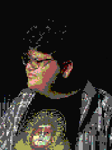

Nome: Guilherme Aguiar
Conhecido como: Guiguetz
Raça: Orc
Nível: 24
Tendência: Leal-Neutro
10
07
09
12
09
09
Força
Destreza
Constituição
Inteligência
Sabedoria
Carisma
Perícias
- *Falar com animais
- *Instrumento (Guitarra)
- *Perícia (back-end) (+2)
- Montaria (bicicleta)
Biografia
Criado em uma ilha em forma de dragão, Guilherme aguiar - o bardo, vive em uma caverna também conhecida como seu quarto, onde está explorando novas formas de misturar música, artes visuais e programação. Começando a se aventurar em códigos aos 12 anos, trabalhou por um tempo com energia solar e microprocessadores, então decidindo migrar para a área de desenvolvimento web e de jogos, onde está a mais de 5 anos.